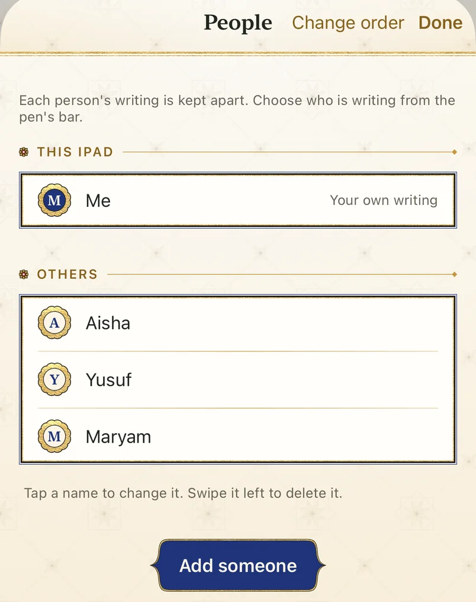
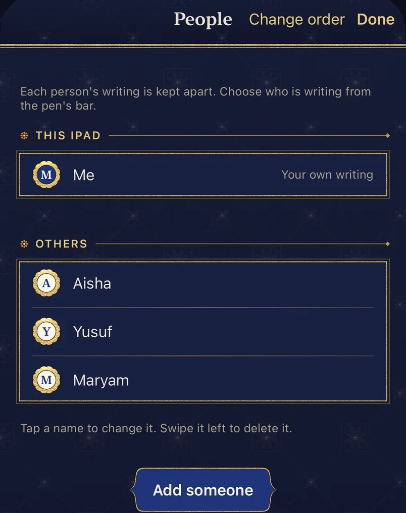

Quran app for iPhone, iPad and Android
Read, repeat,
remember.

The real Madina mushaf, any ayah on repeat, and prayer times for your city. Free forever, with no ads and no account.


Free · iPhone and iPad (iOS 17 or later) · Android (8.0 or later)


The Quran tab
Paper and gold, or lapis and gold.
- Continue takes you back to the page you left, with Listen and Repeat beside it.
- The surahs you read lately, then every surah with its own painting.
- Light is paper and gold. Dark is deep blue and gold. Choose one in Settings.


Repeat
Play any ayah over and over.
- Tap an ayah. To play more than one, tap the first and the last.
- Choose how many times each ayah plays, and a pause after it so you can recite.
- Or press Listen to play from this page to the end of the surah.
- 31 reciters. It keeps playing when your phone is locked.
- An ayah you have played once plays again with no internet.
- Or save any surah, or all 114, ahead of time: go to Settings, then Saved recitations.


The mushaf
The real Madina mushaf.
- Page 562 here is page 562 in your printed Quran, line for line.
- Madina, Classic and Indopak prints. The Madina print can show tajweed colours.
- The Indopak 15-line pages in the book's own calligraphy, checked line by line. Painted in the style of the old Qurans of India.
- Find any ayah: type a surah and a number, like Baqarah 255. New
- 19 translations in 17 languages, and a short tafsir for every ayah in 9 languages. Press and hold a word to see what it means.


Salah
Prayer times for your own city.
- Prayer times by the method most people use in your country. They change when you travel. New
- A countdown to the next prayer, and the whole day on one page with the path of the sun.
- The qibla on an astrolabe that turns with your phone, and the distance to Makkah. New
- An adhan or an alarm for each prayer, only if you turn it on.
- Widgets for the Home Screen and Lock Screen.


Dua
Morning and evening duas.
- The duas for this time of day come first, under a painted heading.
- The morning and evening sets, duas after the prayer, and durood.
- Every dua says where it comes from.

iPhone Duo and iPad
Two pages open, like a printed Quran.
Open your iPhone Duo, or turn your iPad on its side. Tap the page to show the buttons, and again to hide them. The surah list and the meaning open beside the page.
Closed, the iPhone Duo shows one page, like any iPhone.
The pen, on iPad
Write notes on the page.
Highlight an ayah, underline a word, or make a mark in the margin, with Apple Pencil or your finger. Your writing goes under the letters, so it never covers the words of the Quran.

1
Highlight, underline, write
Tap the page, then Pen. Choose the pen or the highlighter, and one of five colours. The eraser rubs out.
2
Everyone keeps their own writing
A family or a class can share one iPad. Tap your name in the pen's bar to choose who is writing, or Add someone. The page shows only that person's writing.


- Your writing stays on its page. One switch hides it.
- Kept on your iPad and in its backup, and nowhere else.
- The pen works on the open iPhone Duo too.

More in the app.
Pick up where you stopped
Continue, at the top of the Quran tab, takes you straight back to the page you left. Under it are the surahs you read lately.
Your days in a row
The Quran tab shows how many days in a row you have read. On Friday, a note on the Quran tab reminds you to read Surah al-Kahf.
Makkan and Madinan
In the list of surahs, the Kaaba marks a Makkan surah, and a mosque marks a Madinan one.
Find your place
The Quran tab lists all 114 surahs, or the 30 juz. Tap a juz to open the page where it starts.
Works with no internet
The mushaf, the translations, the tafsir and the duas are all in the app. Only the recordings are downloaded, each one the first time you play it, or whole surahs ahead of time from Saved recitations in Settings.
The screen stays on
It will not dim or lock while a page is open, so you can read to the end of it without touching the screen.
From the App Store
In their own words.
Best Quran app for the iPhone Duo
Most polished Quran app created, I prefer the indo pak script and this makes it very easy to use with the Duo!
Free app
Loved the app, let allah give a place in heaven who made this app for free
Best Quran App
The best well thought out Quran app I ever used. I have used multiple different ones over the last few years but this one is clean, and the UI is very nice. May Allah bless the maker of this app
تطبيق رائع جدا
تطبيق مرة حلو يخليك تحفظ جد وشكر خاص للمطور🫡
In English
A really great app
A very nice app. It really makes you memorize. Special thanks to the developer.
Questions
Before you download.
Is it really free?
Yes, and it always will be. No ads ever, no subscription, nothing to buy, and no account to make.
Is the mushaf the same as my printed one?
Yes. The Madina pages match the printed mushaf line for line. The Indopak 15-line pages were checked line by line against the printed book. The painting is only around the words.
Do I need the internet?
Only to download a recitation: the first time you play it, or ahead of time from Settings, then Saved recitations. The mushaf, translations, tafsir and duas are inside the app.
Does the app listen to me?
No. The app cannot use the microphone. Nothing you recite is heard or recorded.
The gold moves with my phone. Is that tracking me?
No. The app reads only how the phone is tilted, to move the light on the gold. It keeps nothing and sends nothing.
Is it on Android?
Yes. It is on Google Play, the same app as on iPhone and iPad.
Something else? The Support page answers more, and a real person reads every email.
Our promise
Free forever. No ads, ever.
Quran Pages will always be free, and it will never show an ad. So nothing haram, and nothing you would not want your family to see, can ever appear next to the Quran.
There is no account and we have no servers, so nothing about you comes to us. Your progress stays on your phone or iPad. Read the privacy policy.
- Free forever
- No ads, ever
- No account
- Your progress stays on your phone
Get Quran Pages. Free forever.
For iPhone, iPad and Android. No ads, ever. No account.
With thanks to
King Fahd Glorious Quran Printing Complex Quranic Universal Library Quran.com QuranEnc.com Tafsir Center for Quranic Studies QuranWBW everyayah.com IslamHouse GeoNames The reciters and translators